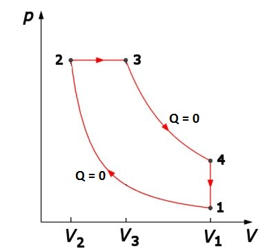
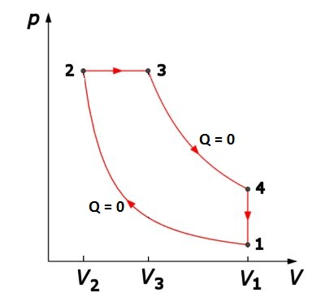
Figura 2-1. Ciclul termodinamic al motorului Diesel.
Elemente de termodinamică. |
Motoare termice |
G-2. |
Motorul Diesel |
În 1897, germanul Rudolf Diesel a realizat un motor mai eficient decât cel al lui Otto, comprimând doar aer (neamestecat cu combustibil). Este evitată astfel autoaprinderea combustibilului, iar raportul de compresie poate fi mărit foarte mult.
Combustibilul este introdus în cilindrul motorului doar la sfârşitul compresiei, aprinzându−se în contact cu aerul suficient de fierbinte.
Arderea combustibilului este mai lentă, făcându−se pe măsură ce acesta pătrunde în cilindru. Transformarea este aproape o izobară (figura 2−1).
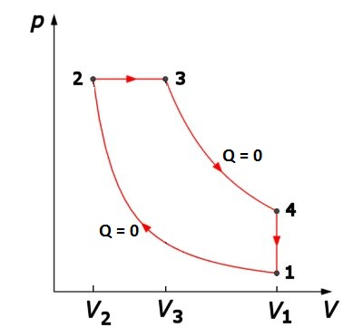
Figura 2-1. Ciclul termodinamic al motorului Diesel.
 Provocarea 2-1
Provocarea 2-1
Cât este oare randamentul ciclului Diesel?
Poţi calcula randamentul oricărui ciclu termodinamic folosind cea mai convenabilă variantă a expresiei:
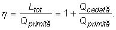
Două dintre transformările ciclului Diesel sunt adiabate, astfel încât sistemul schimbă căldură cu mediul doar în celelalte două transformări. Cea de−a doua variantă este mai convenabilă − vei fi nevoit să exprimi doar două cantităţi de căldură.
În timpul transformării izobare 2→3, datorită arderii combustibilului, gazul primeşte cantitatea de căldură:
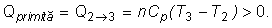
În timpul transformării izocore 4→1, datorită deschiderii supapei de evacuare, gazul se răceşte brusc, cedând cantitatea de căldură:
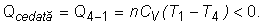
Astfel, expresia randamentului ciclului Diesel devine:
| 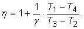 | (1) |
Temperaturile atinse în timpul ciclului nu sunt independente. Din ecuaţia compresiei adiabatice 1→2, obţii:
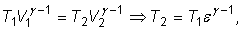
unde 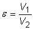 este raportul de compresie al motorului.
Din ecuaţia transformării izocore 2→3, obţii:
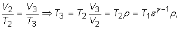
unde 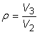 este raportul de destindere izobară.
Din ecuaţia destinderii adiabatice 3→4:
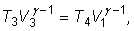
rezultă
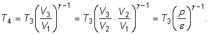
Astfel,
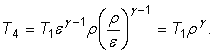
Folosind în relaţia (1) expresiile prelucrate ale temperaturilor, expresia finală a randamentului ciclului Diesel este:
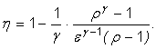
Motoarele Diesel funcţionează cu randament mai mare decât cele Otto şi pot utiliza combustibili mai ieftini (cum este motorina), neexistând pericolul autoaprinderii în timpul compresiei.
Cu toate acestea, motoarele Diesel prezintă dezavantajul unei funcţionări mai lente − arderea combustibilului se face treptat, pe măsura introducerii acestuia în cilindru. Aceasta conduce la motoare mai masive, la aceeaşi putere dezvoltată (putere specifică mică).
Motoarele moderne funcţionează după o combinaţie a ciclurilor Otto şi Diesel, păstrând parte din avantajele fiecăruia: randamente ridicate şi puteri specifice mari (figura 2−2).
| 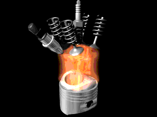 | Figura 2. Funcţionarea unui motor modern, cu patru supape pentru fiecare cilindru şi injecţie de benzină. |